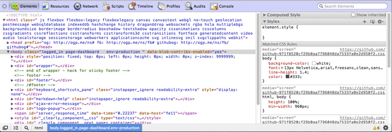
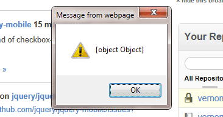
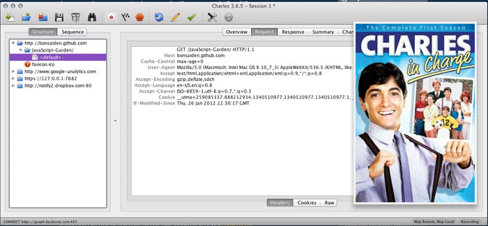

JavaScript Debugging
Tips & Best Practices
Who is this guy?
- Tech Lead at Ally Financial
- Freelanced full-time for 8½ years
- Self-taught
(with the help of really smart people) - Love debugging JS issues... mine and others.
Okay, so what are we talking about?
Quick tips...
- Commenting and Maintainable Code
- Code Linting with JSHint or JSLint
- Implement unit tests
- Follow good and common patterns
- Minimize your globals
- Use your curly braces
- Readable variable names
Show me the tools!

An architect's most useful tools are an eraser at the drafting board, and a wrecking bar at the site.
Frank Lloyd Wright
No more alert() please

Chrome Tools tricks
you may not know about
- It's the cog!
- Quick console
- Pretty print
Check out the Debugger on that thing
The console is your friend
Breakpoints / Step Debugging
Debugging Ajax
Elements
60 seconds or less
about Source Maps
60
Ask yourself the right questions
- Why isn't "x" happening?
- Where is the first point of possible failure?
- What's the call stack look like?
- What conflicts could there be?
- Do the elements exist in the DOM?
- Were the elements in the DOM on execution?
- What the heck is this?
A Few Common JS Errors
Syntax Error
var foo = 'Don't do it!'; //Syntax Error
if(bar) {
...
...
// Syntax Error
"X" is undefined
- Is this coming from another file? Is it loaded?
- Is "X" in the same scope chain as you?
Trailing comma in your Objects (IE will fall all over itself failing on this)
var name = {
first: 'Vernon',
last: 'Kesner',
};
Proxy Debugging
Charles Proxy is one of the best kept
secrets in front-end development.
 Charles in Charge image: http://www.imdb.com/title/tt0086681/
* You can also check out Fiddler if you don't want to spend the money.
Remote Debugging
- Charles is still in charge
- Adobe Shadow
- Other tools:
- Emulators
- weinre [wee-ner]
- jsconsole
Toolkit Review
- Chrome Tools, Firebug, Firefly, IE Dev Tools
- FireQuery, Omnibug, FireRainbow
- Charles Proxy (or Fiddler)
- CodeKit (or LiveReload)
- Companion JS (for IE7 console)
- Adobe Shadow
- JSShell
- JSFiddle
Time for a short debugging session
Woo-hoo!
 http://www.fanpop.com/spots/mr-bean/images/166155/title/mr-bean-photo
http://www.fanpop.com/spots/mr-bean/images/166155/title/mr-bean-photo
Thank you!
Any questions?
- Catch me on Twitter @vernonk
- Check out the presentation notes on GitHub for links and a copy of the slides: http://github.com/vernonk/js-debugging-pres
- View the presentation on GitHub Pages: http://vernonk.github.com/js-debugging-pres/